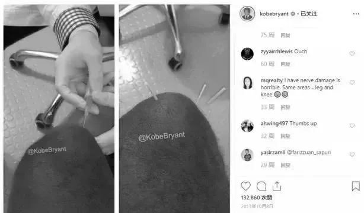
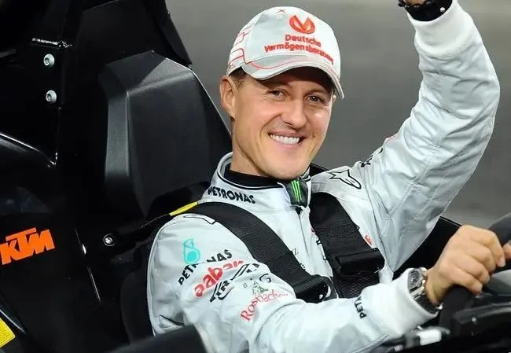

年后肝"负重"？百年春护肝美颜能量抗衰老针——给肝"松绑"，让脸发光！
2026-03-01

About Us
关于百年春
2024年巴黎奥运会已于7月26日正式开幕，目前各类赛事正如火如荼地进行中。
奥运会对于我们普通人来说是一场体育的狂欢与盛宴；但对于运动员而言，这不仅是他们展现实力的舞台，更是他们职业生涯中不可多得的宝贵机会。因此运动员不仅需要通过大量的训练来提高自身状态，更是要在赛场上一次又一次挑战着自己的身体极限。身体长期超负荷的运转最终导致了他们更易饱受伤病的摧残，肌腱炎、肌肉拉伤、关节炎乃至骨折等职业病如影随形，严重威胁着他们的职业生涯与长期健康。
据悉仅在欧盟，每年就有约620万人因运动损伤而需要住院治疗。但近年来，随着干细胞治疗和再生医学的发展，生物技术现在可用于治疗运动损伤，并且多位体育明星已经从干细胞治疗中获益，从而使伤病加速恢复并重返赛场，重回巅峰 。
2012年，NBA球星科比·布莱恩特采用细胞疗法治疗膝盖。当时科比受困于膝伤状态不佳，细胞疗法有效缓解了他的膝盖伤势，延长了职业生涯。科比的治疗成功获得广泛关注，他自己忍不住在instgram上发图介绍了他的治疗情况，这种治疗方案一度被誉为“科比疗法”。

NBA凯尔特人队球星肯巴·沃克由于左膝盖酸痛并伴有大量积液严重影响了赛场上的发挥，并且此前沃克的左膝盖已经接受过了三次修复手术，但效果并不是很理想。
后来沃克接受了长达三个月的干细胞注射疗法。接受干细胞疗法后的沃克左膝状态已经明显好于从前，尽管膝盖的老伤在一定程度上影响到了他的发挥，但接受完干细胞注射后的沃克状态有望得到明显提升，并能帮助球队取得更多的胜利。
2016年皇马球星C罗在比赛中多次遭受侵犯，赛后被确诊为肌肉纤维撕裂，恐难再战。为了不影响后续赛事，缩短康复期，其医学专家团确立了为C罗进行干细胞修复的方案。
通过干细胞的介入治疗，把通常需要近一个月的恢复期，缩短为半个月。C罗在受伤14天后就重返赛场，在2016年带领葡萄牙勇夺欧洲杯冠军，并在随后的连续三个赛季拿到欧洲冠军杯三连冠。
干细胞可以说是延续了C罗的运动生命并促使他走向足球巅峰的绝密武器。而这种短期且高效的干细胞修复方案也成为了每个俱乐部的标配。
据法国《巴黎人报》报道的一则信息点燃了整个社交媒体：舒马赫醒了！而这激动人心的消息背后功臣正是「干细胞疗法」。
迈克尔·舒马赫，德国一级方程式赛车车手，现代最伟大的F1车手之一，在他头16年的职业生涯中，几乎刷新了每一项纪录，总共赢得7次总冠军。

2013年12月29日，这位创造91个分站赛冠军纪录的车王在一次滑雪事故中头部受伤，严重的伤势使他瘫痪，并丧失语言能力。后因药物原因昏迷了三个月，一直接受重症监护，再也没有在公共场合露面。
根据报道，舒马赫经过一系列治疗奇迹般苏醒恢复，虽然他的治疗细节仍将保密，但可以确定的是，因为脑部神经损伤导致重伤昏迷的舒马赫受益于“分布在体内的干细胞的注射，从而获得全身的抗炎作用”，另一方面，也可以通过干细胞归巢及旁分泌释放营养因子修复神经组织等特性带来“有意识”的康复状态。
除此之外，还有西班牙网球运动员纳达尔、美国著名田径运动员迈克尔·约翰逊、亚利桑那红雀队跑锋克里斯·约翰逊、纽约大都会投手托罗·柯隆......受过干细胞拯救体育生涯的运动员数不胜数。
干细胞疗法在运动员运动损伤治疗中的具体作用机制包括：促进受损组织的修复和再生，减少炎症和疼痛，提高关节稳定性和功能等。通过注射干细胞到受损部位，可以激发机体的自我修复能力，加速组织的再生和修复过程。同时，干细胞还可以分泌多种生长因子和抗炎因子，调节局部微环境，促进炎症的消退和组织的恢复。
除了运动员外，干细胞疗法在普通人群的运动损伤治疗中也有着广泛的应用前景。随着科技的不断进步和医疗技术的不断发展，干细胞疗法有望在未来成为更多人的选择，为他们的健康和生活质量带来积极的影响。
干细胞疗法的成功应用，不仅为运动员提供了更好的康复方案，也为运动医学的发展注入了新的希望。期待未来，干细胞疗法能够造福更多运动员，让他们在赛场上尽情展现风采，无惧伤病困扰，重回巅峰时刻。